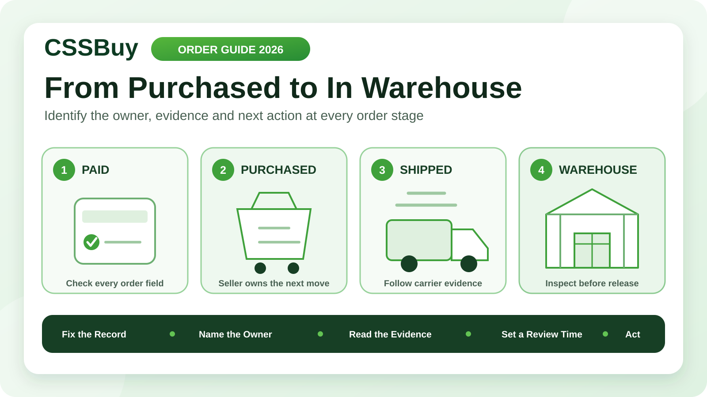

CSSBuy Order Status Guide 2026: From Purchased to In Warehouse
A CSSBuy order can look frozen even while someone is working on it. Payment may be under review, a purchasing agent may need one missing detail, the seller may be preparing stock, a domestic courier may be moving the package, or the warehouse may have signed for it without completing intake. Calling every pause a delay hides the real question: who controls the next action?
CSSBuy’s current Buy For Me workflow shows a clear sequence. The buyer submits and pays for the item and Chinese local delivery. CSSBuy contacts the seller and purchases it. The seller sends it to the warehouse, where inspection, photos and storage follow. Only after that does the buyer select stored items for international delivery.
This guide treats an order status as an ownership signal. It helps you decide when to wait, when to supply information, when to ask CSSBuy to contact the seller and when warehouse evidence should replace seller promises.
Start with a fixed order record
Before watching status changes, save the facts that should remain stable: CSSBuy order number, seller or marketplace, product link, exact variation, quantity, item price, Chinese domestic freight and the date payment completed. For a manual or Expert Buy order, also preserve the title, seller contact details, images and final note.
This record gives every later question a reference point. If the seller proposes a different colour, you can compare it with the paid selection. If the domestic freight changes, you can identify the original amount. If the warehouse receives a different quantity, you know whether the mismatch began in your instruction, the purchase or the seller’s shipment.
Do not rely on a listing remaining unchanged. Product pages can be edited or removed while the order is in progress.
Separate payment from purchasing
A successful buyer payment does not mean the seller has already accepted an order. It means CSSBuy can begin the purchasing stage. The public workflow says CSSBuy will contact the seller and purchase the submitted items; it also says CSSBuy may contact the buyer when information needs to be completed.
At this stage, check for a price difference, unclear variation, unavailable selection, domestic freight adjustment or request for confirmation. These are not ordinary waiting problems. They are decision gates. The purchasing agent cannot safely choose on your behalf when the answer changes the product or total.
Reply with one complete instruction. “That is fine” is weak when price and colour were both discussed. “Approve the revised domestic freight, keep black size L, and cancel rather than substitute if size L is unavailable” closes every open branch.
Read the 24-hour statement correctly
CSSBuy currently says that, excluding holidays, it usually deals with orders within 24 hours after payment. This describes CSSBuy’s handling stage. It should not be converted into a promise that the Chinese seller will dispatch within 24 hours or that the product will reach the warehouse the next day.
Three clocks are involved. The agent-handling clock covers purchase review and seller contact. The seller clock covers stock confirmation, preparation and handoff to a domestic courier. The courier clock covers movement to the CSSBuy warehouse. A fourth intake clock begins when the warehouse receives the package.
When you measure a delay, name the clock. “Five days since payment” is less useful than “CSSBuy purchased the item four days ago, but no seller dispatch record has appeared.”
Purchased is a commercial milestone
Once CSSBuy has placed the order, the seller becomes the main owner of progress. Purchased means the buying instruction has moved into a seller transaction. It does not prove stock was physically reserved, packed or collected by a courier.
Check the original listing for preparation language. Ready-stock retail goods, custom items, preorders and wholesale batches should not share one waiting rule. A made-to-order product may legitimately require production time. An ordinary listing with no dispatch information deserves a clearer follow-up when it remains inactive.
If timing matters, ask for a factual outcome: whether the seller confirmed stock, whether a dispatch date was provided, and whether cancellation remains possible. Avoid asking CSSBuy to “make it faster” without identifying the decision you need.
Seller shipped needs carrier evidence
A domestic tracking number is useful, but the first carrier scan is stronger evidence than the number alone. A seller can create or enter a number before the parcel is physically accepted. Record the carrier, number, first scan, latest location and last update time.
If scans are moving between Chinese facilities, the seller has completed the basic handoff and the domestic carrier controls transit. If there is a number but no acceptance movement, ask whether the seller actually handed over the goods. If the number appears unrelated to the order or shows an impossible destination, report the mismatch through the order record.
Judge the evidence as a sequence. One delayed scan is not automatically a lost parcel, but repeated contradictions deserve a documented enquiry.
Delivered is not yet In Warehouse
A domestic courier’s delivered scan and CSSBuy’s warehouse status describe different events. Delivery indicates that the carrier recorded a handoff at the destination. The warehouse must still receive the package, associate it with the correct order, inspect visible details, prepare photos and place the item into storage.
Allow for that intake gap before reporting a missing item. Then compare the tracking delivery time with the order’s warehouse updates. If reasonable processing time passes without a match, provide the order number, domestic tracking number, delivery timestamp and any carrier proof shown in the record.
A concise mismatch is actionable: “Domestic tracking shows delivery to the warehouse on September 6 at 14:10, but Order X has no receiving update.”
In Warehouse starts a new decision stage
In Warehouse is not merely the end of domestic delivery. It is the beginning of buyer verification. CSSBuy’s current instructions say quality inspection is carried out, photos are taken and the stored item can be viewed in User Center under My intl order.
Compare the warehouse record with the fixed order record. Verify style, colour, size or model, quantity and visible condition. If an essential attribute is not shown, request the appropriate clarification or evidence before including the item in an international parcel.
Timing matters here for a different reason. CSSBuy currently publishes a return process tied to eligibility, seller acceptance, fees and an item being in the warehouse for less than seven days. The status change therefore starts a decision window, not an unlimited inspection period.
Use My Order for the domestic chain
CSSBuy’s current service page directs purchasing, shipment verification, returns and refunds enquiries to the relevant record under My Order using Add Note. It separately directs international tracking and parcel-detail enquiries to My Parcel.
Before an item is submitted internationally, keep the question attached to My Order. This preserves the link among the product selection, seller transaction, domestic tracking and warehouse evidence. After international dispatch, parcel logistics belong to My Parcel.
Routing the issue correctly reduces context loss. It also prevents an order-stage seller delay from being mixed with an international-carrier delay that has not happened yet.
Write a note that can be answered
A useful Add Note contains four elements: the order reference, the last verified event, the unresolved question and the action you want. Include exact timestamps or tracking details when they matter.
For example: “Order X was purchased on September 2. No domestic tracking is visible and the listing did not state preorder. Please confirm whether the seller has stock and provide the expected dispatch date. If the seller cannot dispatch this week, please advise whether cancellation is still available.”
Do not send several short notes that each contain one part of the story. One complete timeline is easier to investigate. When CSSBuy replies, preserve the answer with your order record.
Control substitutions and price changes
Seller exceptions often create more risk than waiting. An out-of-stock item may lead to a proposed colour change, size change, revised version or higher price. Decide your limits before the question arrives.
Create three rules: acceptable substitutions, maximum additional cost and a stop condition. A strong instruction might allow the same model in charcoal instead of black, reject any size change and require cancellation above a stated price difference. For a batch, state whether the rule applies to every unit or only the unavailable variation.
Never let urgency turn silence into consent. A faster wrong item still becomes a warehouse return problem.
Manage several orders with a readiness board
A consolidated haul rarely moves as one unit. Give every order a row and track five dates: paid, purchased, seller dispatched, warehouse delivered and In Warehouse. Add columns for the current owner and next review date.
This board identifies the true blocker. Nine stored items do not make the tenth seller faster, but they give you a parcel choice. You can wait, investigate, cancel when eligible or ship the ready group separately after comparing the additional freight and timing consequences.
Do not use the oldest order date alone. Consider product importance, seller commitment, return eligibility, storage age and the cost of splitting.
The wait-or-act test
Wait when the current owner and evidence agree: CSSBuy is within its normal handling period, the seller disclosed preparation time, domestic scans are moving, or the warehouse has only recently signed for the package. Set a specific review time instead of refreshing continuously.
Act when the evidence conflicts: a buyer confirmation remains unanswered despite your reply, a seller promised dispatch but no carrier acceptance appears, domestic tracking shows delivery without a warehouse match after reasonable intake time, or warehouse evidence does not match the paid selection.
The action should target the conflict. Clarify the decision, request seller confirmation, provide tracking proof or ask for warehouse verification. Status watching becomes useful only when it produces the right question.
A ten-minute order audit
Minute one: open the order and confirm payment. Minute two: check for a CSSBuy question or price difference. Minutes three and four: identify whether CSSBuy, the seller, carrier or warehouse owns the next step. Minutes five and six: record tracking and timestamps. Minute seven: compare elapsed time with disclosed preparation. Minute eight: check the planned review date. Minute nine: draft one evidence-based note if action is needed. Minute ten: update the readiness board.
The objective is not to eliminate normal waiting. It is to distinguish normal waiting from a missing decision or broken handoff.
CSSBuy connects several independent actors: buyer, purchasing agent, Chinese seller, domestic courier and warehouse team. A status cannot control all of them, but it can tell you where the order currently sits. Keep a fixed record, measure the correct clock, follow the evidence and attach each question to the relevant order. That approach turns a vague “stuck order” into a precise next action—and helps the right person solve it.